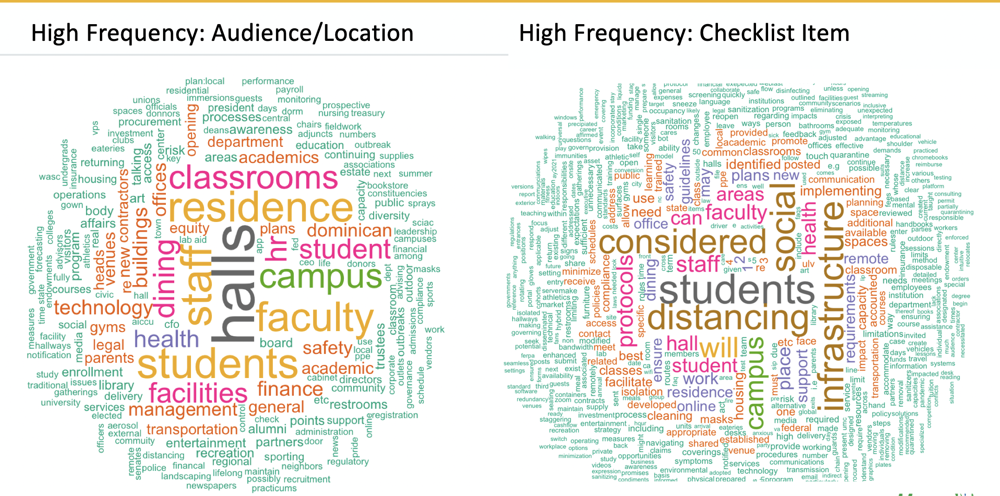

Additional Tools
6.1 Chronicle’s Database for Reopening Schools
This pulls from the Chronicle of Higher Education’s List of Colleges’ Plans for Reopening in the Fall . The table has been reduced to just California institutions. This form accepts additional institutions.
6.2 California Department of Public Health - Stage 2 County-Level Map
This pulls from the California Department of Public Health Stage 2 County-Level Map .
6.3 McKinsey’s Nerve Center Framework
6.4 Results: Phase 1 Checklist
